DIG LOG
Dig-Logは、重労働である雪かきを誰もがやりたくなる活動に変える、世界初の雪かき専用IoTデバイスです。スマートフォンと連動し、雪をかいた重さやカロリー量を算出、そのデータをもとにゲームやフィットネスに活用できます。


博報堂アイ・スタジオのクリエイティブラボラトリー
「HACKist」は、第３回の展示を2016年5月21日から28日まで神宮前galaxy gingakeiで行います。今回は新たな10以上の作品展示のみならず、DE DE MOUSEとのコラボレーションライブ、様々なシーンの最前線で活躍するアーティストのトークショーを予定しています。

Dig-Logは、重労働である雪かきを誰もがやりたくなる活動に変える、世界初の雪かき専用IoTデバイスです。スマートフォンと連動し、雪をかいた重さやカロリー量を算出、そのデータをもとにゲームやフィットネスに活用できます。
Pechat(ペチャット)は、ぬいぐるみにつけるボタン型おしゃべりスピーカー。専用のスマホアプリで、ぬいぐるみのふりをして子どもとおしゃべりすることができます。Pechatは、育児を楽しくアシストする次世代玩具です。
PLUS ANIMAはモノとコミュニケーションできるインタフェースです。テーブルの上に置いたモノをディープラーニングで解析、モノにまるで魂が宿ったかのような演出をプロジェクションマッピングで施すことで、モノとコミュニケーションを実現します。
TREK TRACKは登山と人の関係を安心でつなぐプロジェクトです。登山者の行動を一定間隔でデータに保持し、第三者が遠隔からモニタリング出来る新しいアウトドアデータプラットフォームを提供します。
PLAN−NETは、Google Calendarと同期することで、スケジュールを魅力的なGenerative Artへ再生する置時計型デバイス。淡々と時を刻むだけだった時計を、全てのスケジュールを理解し、直感的に伝えてくれるパートナーへ。
POSTIEは、思いをすぐに手紙で届けてくれるメッセンジャーボックス。写真もスタンプも手書きの言葉も、メールのような手軽さで届けてくれます。手紙よりも早くて、メールよりもハートフル。これは、大切な人を手紙で結ぶ、あなただけの配達員です。
セットした野菜たちに触れることで、野菜が自身のトレ―サビリティを話したり、自己紹介したりする店頭プロモーションツール。今回の展示では、コンパクトに生まれ変わった新しいトーカブル・ベジタブルを披露します。
「別世鏡」それはあなたを異世界へと誘う不思議な鏡。自分がキャラクターに成り代わり、漫画からリアルへ、リアルから漫画へと次元の境が曖昧になっていく体験をお楽しみあれ。
漫画は絵巻物を起源として、印刷の技術によって綴じ型へと変化を遂げた。現代の技術の進化は、漫画をさらに進化させるのではないだろうか。デバイスの特性を生かした漫画「マンボウの書」など、これまでと違った体験のできる短編漫画作品を発表する。
コンピュータに向かう詩人の姿に覚える違和感は彼らの詩に存在する意味と構造以外の概念的な「間」が原因ではないか。ペン先を上げ改行する動作、句読点を打つ一息のようにキー入力において失われる「間」を表現し、詩人をより詩人らしくする作品を制作。
平面だけの表現だけではなく、ARを使って音楽を「空間」で捉える新たなミュージックビデオに挑戦しました。幾何学な憧憬を言葉と音で表現した抽象的な映像を、スマートデバイスから覗き込むことで、映像には映らない言葉の「裏」を伝えます。
布は衣服からインテリア等、人の生活に欠かせないものである一方、中長期的な経年変化を除きその色彩は変わらない。ふわッチは、ステッチ状に縫い付けた糸にインタラクティブ性を加えることで、繊維の色彩・日常への変化を与えることを目的にしている。
現象の中に潜んだ独特のリズムを抜き出すことで、自然のことわりに触れ、そこにあるかも知れないなにがしかのメッセージを読み取る試み。水の染みこんだスポンジから水滴が落ちる時、そこにどのような規則性が生じうるのか、音に置き換えることで観察する。
OTOPE は触感と聴感の探求をテーマとした暗闇で行う体験型プロダクトです。「音の肌」を身に着けて物に触れたり、体に乗せるとその物や素材の持つ声を「聞きわける」ことができるようになる、目の不自由な人も共有できる新しい感覚世界を提供します。
D・E・E・PはDigital Enhancement Effective Programの略称で、デジタルを使った映像効果の実験プロジェクトです。DEDE MOUSE Liveにて人工知能とShaderを活用した映像表現を実施します。
おれは、人工知能ラッパー。まだまだひよっこ。DEDE MOUSE Liveに登場するよ。人間ラッパーより、文脈はハチャメチャ。だけど、魅せつけるぞ、コンピュータの語彙力！
フィジカル&インタラクティブに制御出来る車輪型の新しいDMX照明装置を開発。5/21, 28のDEDE MOUSE Liveにてエキシビション演出として稼動予定。
HACKistのR&Dチームによる技術研究から生まれたプロトタイピングとDE DE MOUSEサウンドが融合するショーケースを披露します。初回の21日(土)は、人工知能によるラップやVJ、筋肉の動きと連動する光る車輪「WHEELED」を現場でプレゼンテーションしながらチューニングする、プロトタイピングの公開リハーサルと共にお届けします。
※28日(土)も同様のショーケースを行う予定です。内容は予告なく変更される場合があります。
織り重なり合う、計算しつくされたメロディと再構築された「歌」としてのカットアップサンプリングボイスと流麗に進む和音で構成された極上のポップソング。ライブスタイルの振れ幅も広く、ツインドラムでの構成から縦横無尽に飛び回るDJスタイル、即興まで多種多様のステージングを展開している。FUJI ROCK FESTIVAL、TAICOCLUB、RISING SUN ROCK FESTIVAL、SonarSound Tokyoの他に海外でもライブを行い活躍。近年では実験的な試みを体現する主催イベント“not”、“DE DE MOUSE × 2”やプラネタリウムを舞台にした公演を行い、各方面から多くの注目を受けている。
2015年12月には3年ぶり5枚目のフルアルバム「farewell holiday!」をリリース、新たな音楽性にトライしている。
"KANEKURE" "そばが食べたい" といったポップなクラブサウンドや、シンガーluluとの"Watermelon"といったメロウな楽曲をMaltineRecodsなどからリリースするほか、虹のコンキスタドール、デイリーポータルZ社歌を手がける。シンガーluluの追加出演が決定しました！
TREKKIE TRAXは2012年に日本の若手DJが中心となり発足したインディーレーベルである。これまでのテンプレートに囚われない様々な音楽を世界に向けて発信することを指針とし、全国各地で活動しているトラックメーカーとともに楽曲リリースを行っている。
HACKist(Future Create Lab)、剛田商店
Roland のオールインワン･グルーヴマシン「MC-909」を使ったライヴやDJで東京を中心に全国各地で活動中。ドリーミーでロマンティックなアーバン･ダンス･ミュージックで各方面から絶大な支持を集めている。2013年秋、待望の3rd アルバム『midori』をリリース。
10年近く続く名物パーティー「TOPGUN」を中野ヘビーシックゼロを経て現在は渋谷KOARAにて偶数月第4土曜に開催中。 下北沢MORE「CULT CLUB」でもレギュラーDJプレイ。
他にDU BOOKS刊『ラグジュアリー歌謡』で選盤＆執筆。
HACKist(Future Create Lab)、剛田商店
ここにトークセッション概要が入ります。ここにトークセッション概要が入ります。ここにトークセッション概要が入ります。ここにトークセッション概要が入ります。ここにトークセッション概要が入ります。
ここにトークセッション概要が入ります。ここにトークセッション概要が入ります。ここにトークセッション概要が入ります。ここにトークセッション概要が入ります。ここにトークセッション概要が入ります。
ここにトークセッション概要が入ります。ここにトークセッション概要が入ります。ここにトークセッション概要が入ります。ここにトークセッション概要が入ります。ここにトークセッション概要が入ります。
・会場のキャパシティに合わせ、入場規制をさせていただく可能性があります。
・「TALK SESSION」のイベント中は、イベントご予約のお客様優先にご案内させていただきます。
・都合によりイベントの内容変更や中止がある場合がございます。
・会場までの交通費等、イベント参加に関わる費用は、受付が終了、または中止となった場合でも、お客様のご負担となります。
・イベント当日取材が入ります。撮影させて頂いた動画・写真は、ウェブサイト・SNSにて使用させて頂く場合がございます。
あらかじめご了承ください。